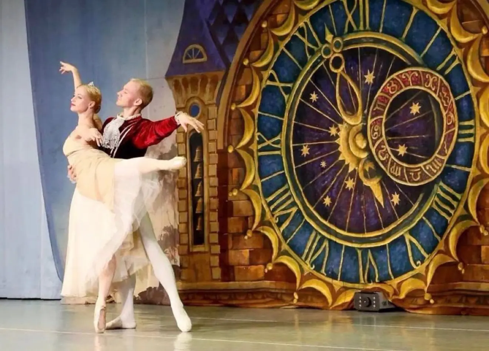
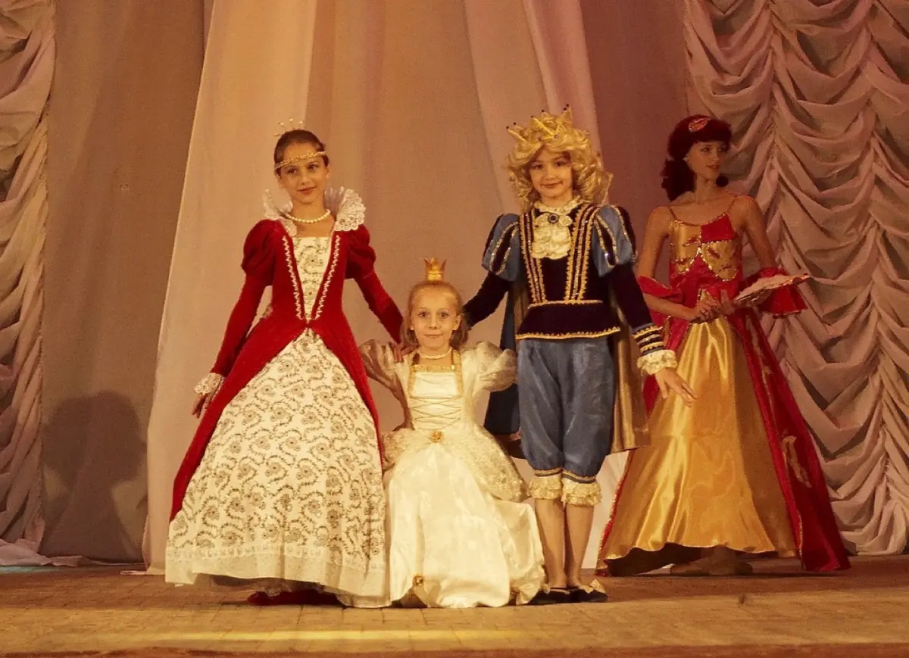
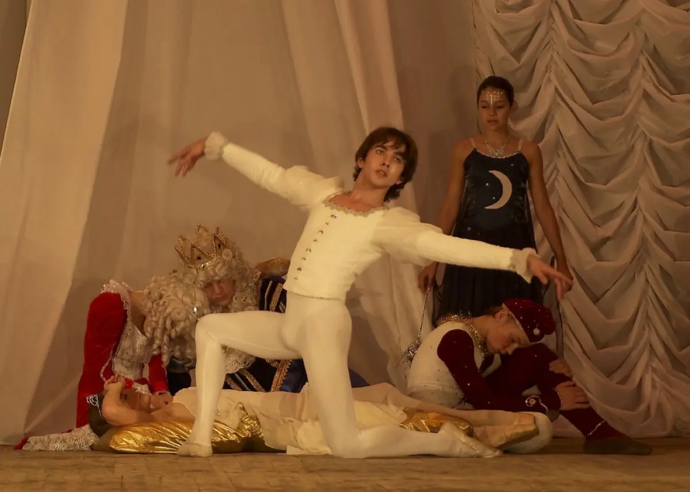
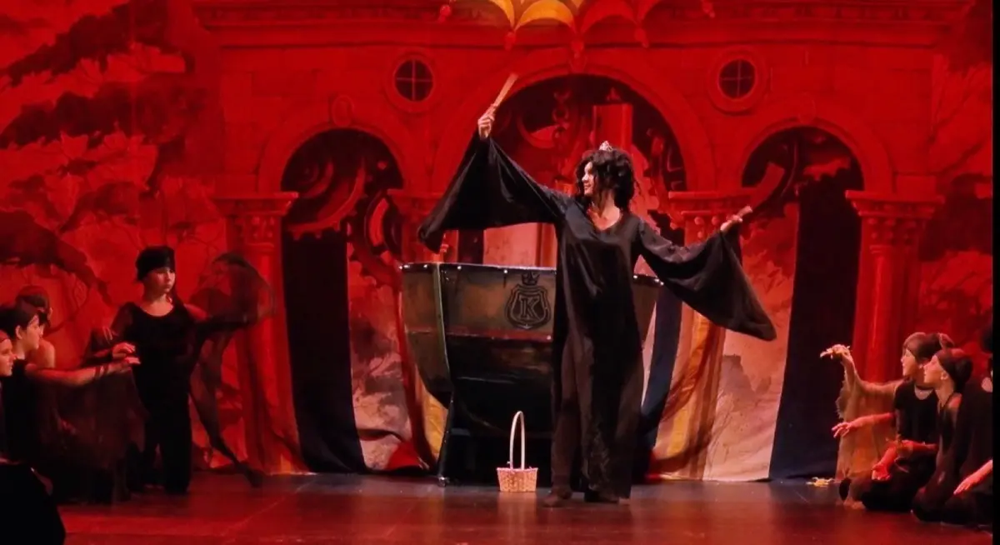
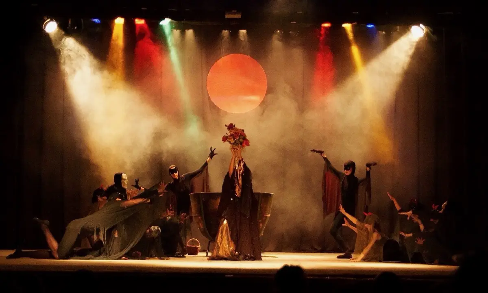
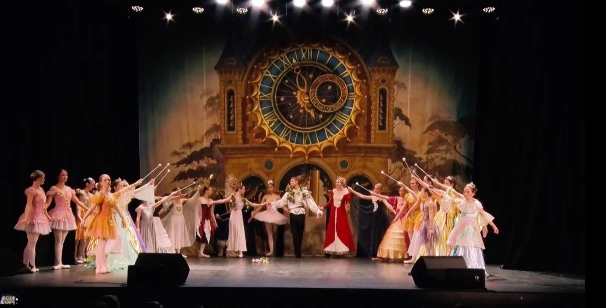
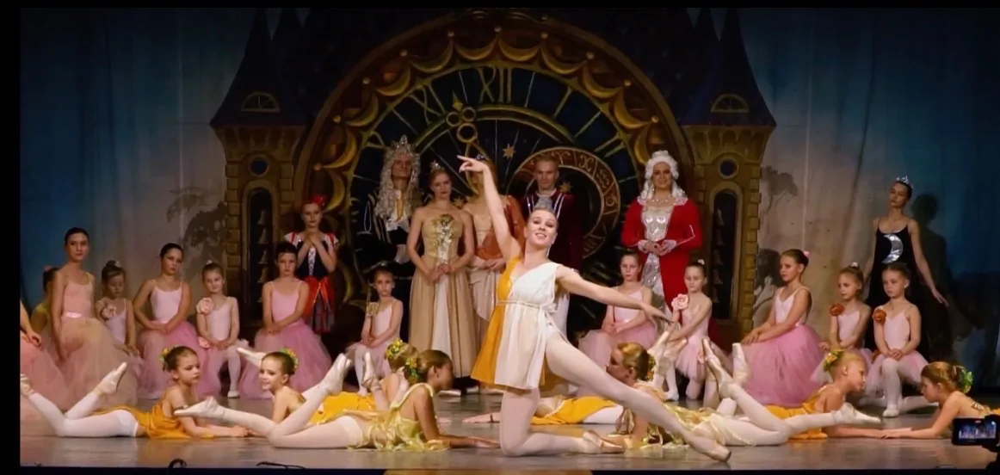
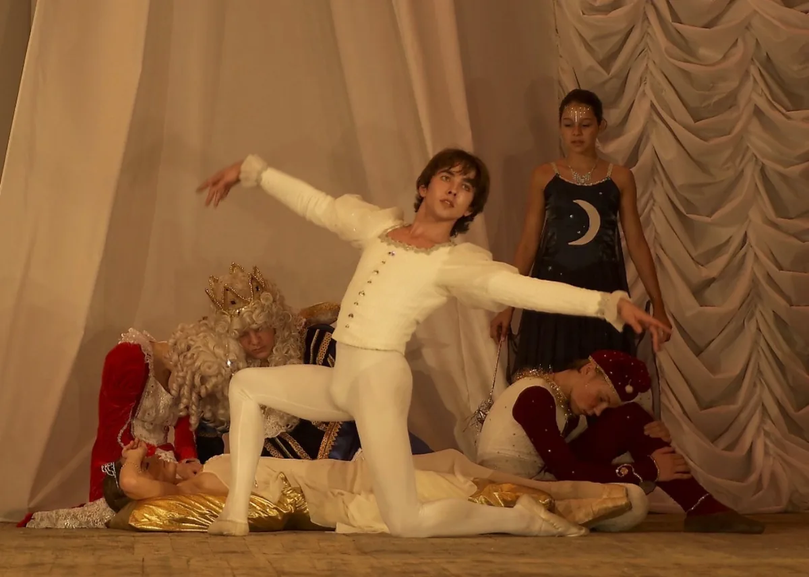

Спектакль
«Спящая красавица»
Спектакль Детского театра балета «Эльф».
Постановка 2003 года, в которой сказочная история оживает в оригинальном либретто, авторской хореографии и сценических образах театра.
- С 2003 года
- Для зрителей от 5 лет
- Около 1 часа 15 минут
- Одно действие
- Без антракта
О спектакле
Ожившая сказка
«Спящая красавица» появилась в репертуаре Детского театра балета «Эльф» в 2003 году. За это время через постановку прошло уже четыре поколения воспитанников.
Для спектакля созданы оригинальное либретто и авторская хореография, собственные сценические эпизоды, образы персонажей, костюмы и оформление.
Характер этой постановки — ожившая сказка, интересная и детям, и взрослым.
Постановка
Авторы спектакля
Либретто и режиссура
Наталия Вячеславовна Борисова
Балетмейстер-постановщик и хореография
Екатерина Викторовна Анисимова
Костюмы
Екатерина Викторовна Анисимова
Музыка
Произведения П. И. Чайковского, Баха и народная музыка
Сценический мир
Постановка, созданная в «Эльфе»
Основа спектакля, созданного в 2003 году, сохраняется и сегодня. Вместе с новым поколением исполнителей меняются сценические задачи и распределение ролей — с учётом возраста и подготовки участников.
Так «Спящая красавица» остаётся узнаваемой частью репертуара «Эльфа», переходя от одного поколения воспитанников к другому.


Сцены спектакля
От появления Карабос — к торжеству добра
Среди ключевых эпизодов постановки — появление Карабос, сцена колдовства и финал, в котором торжествует добро.



На сцене
На одной сцене — разные поколения
В «Спящей красавице» участвуют воспитанники «Эльфа» примерно от 6 до 18 лет. Вместе с ними на сцену выходят выпускники, педагоги и приглашённые профессиональные артисты.
Среди взрослых участников есть и те, кто когда-то начинал свой творческий путь в «Эльфе».
Роли и сценические задачи распределяются с учётом возраста и подготовки. Самые маленькие начинают с доступных им ролей, а более сложные партии чаще исполняют старшие и наиболее подготовленные воспитанники или профессиональные артисты.


Для зрителей
Сказка для всей семьи
«Спящая красавица» рекомендована зрителям от 5 лет и подходит для семейного просмотра.
Спектакль продолжается около 1 часа 15 минут и идёт в одном действии, без антракта.
Пробное занятие
Стать частью театра
Путь к сцене начинается с занятий. Участие в спектаклях становится продолжением обучения для тех воспитанников, которые хотят попробовать себя в сценической работе.
Пробные занятия бесплатно.
Репертуар
Другие спектакли театра
Жар-птица
ПодробнееСнежная королева
Золушка
Балерина Лидочка Иванова — секрет триумфа и тайна гибели
Иммерсивный трагический детектив.